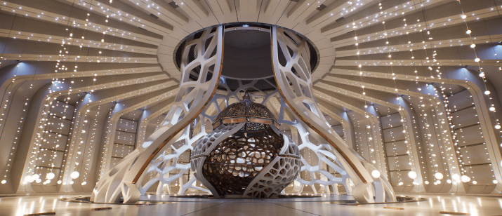
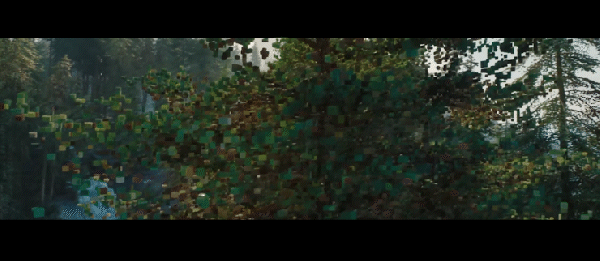
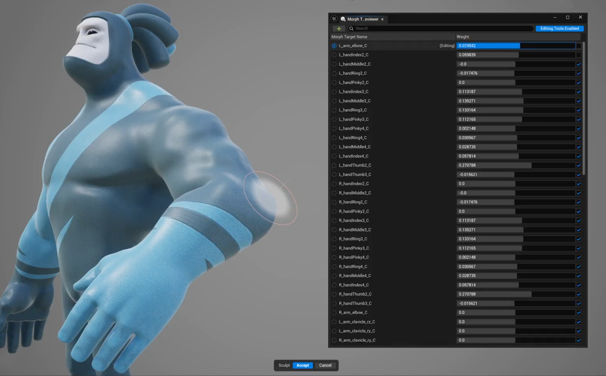
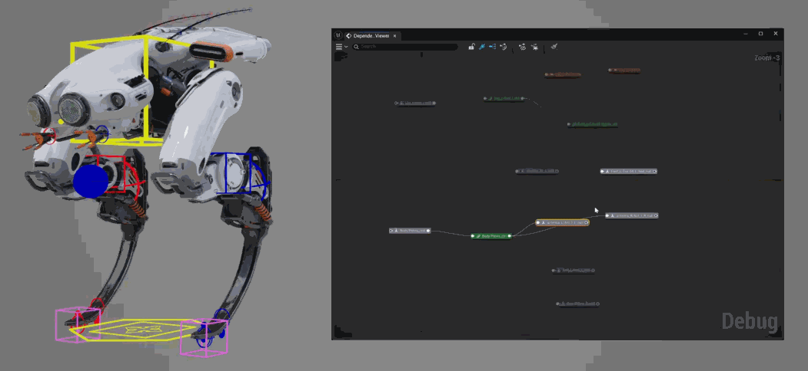
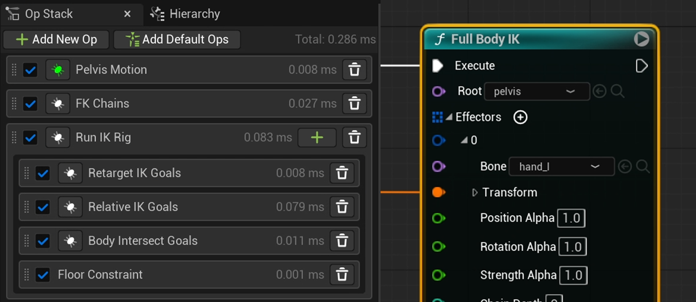
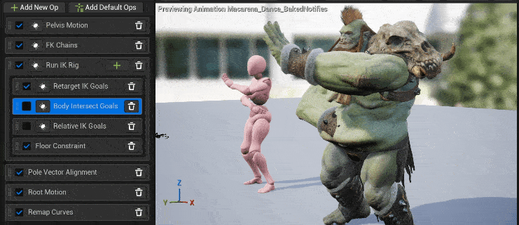
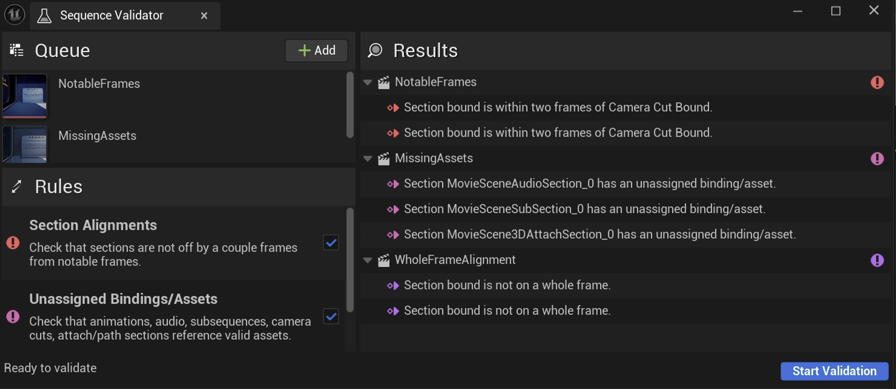

Что нового?
Выпуск Unreal Engine 5.7 приносит дальнейшие улучшения в набор инструментов UE5. Этот релиз включает в себя улучшения в самых разных областях, в том числе рендеринг, анимацию персонажей, создание игрового мира, компьютерную графику и многое другое.
В этот релиз включены улучшения, предложенные нашим сообществом разработчиков Unreal Engine на GitHub. Благодарим каждого из этих участников, внесших свой вклад в Unreal Engine 5.7:
AlexanderVeselov-arm, AlexBlackfrost, Almax27, andreibazi, az6667, Bit-Rot, Brian-PD, brpendle-ti, bturner, chrysos8201, ckendal3, ColinGulliver, CookiePLMonster, Darcy3000s, dasherman-ea, davidbaack, dmergele, DoubleDeez, DrewWeth, DTG-Will-Marshall, dyanikoglu, erebel55, Eric2-Praxinos, Erlandys, faisa-believer, foobit, gamethread, geordiemhall, glecko, GreenLightning, guansdu, H3mul, IngSubstance, iniside, jamesfAnet, jamespark-unreal, JasonCoombs, jdamdami, jerobarraco, jeysym, Jiboo, JohnJFarrow, Jordonbc, jorge-axiomvfx, jorgenpt, jpritchard1010, KaosSpectrum, KarimLUCCIN, KeithRare, kimkun07-k, kissSimple, klukule, KXOC, laurencei, lclara-BARB, LHG-JonAnderJimenez, ligazetom, LightKL, lsandersljungberg, LucaFranzo98, Maigo, MarcusSvensson92, Mario-Azcona, MartinWickhamFB, Mattiwatti, melku, michael-buschbeck-ms, Minus4-44, moumee, nickdarnell, phochstrasser, PICO-XR, QRare, r457-Ao2, rdunnington, reduf, redxdev, RiotJDebern, rohyunsang, sareali, serhanio, SilverWinter0511, slonopotamus, SoulSharer, sportbikerr1, ssutherland-riot, SukenderDontNod, Sythenz, teddemunnik, tioez326, tokyocplusplus, Tt-Wes, tustanivsky, Vaei, vladbelousoff, vogoltsov, WangKan, Wizzard033, wmiller, x157, yangskyboxlabs, yoonbigbear, zachlute-arenanet, ZeroEightSix, ZeroErrors, zhou-
Рендеринг
MegaLights (бета-версия)

MegaLights теперьs приложение находится в бета-версии, в ней улучшены шумоподавление и общая производительность. Также добавлена поддержка следующих функций:
Directional Light
Niagara Particle Lights
Translucency
Hair Strands
Неоднородные объемы Ниагары
Функция гетерогенных томов теперь находится в стадии бета-тестирования. Это обновление направлено на улучшение механизма теневого копирования и включает в себя следующие новые возможности:
- Каскадные тени для направленного освещения.
- Поддержка Beer Shadow Map для масштабируемости Epic, которая обеспечивает:
- Значительно улучшено время создания теней.
- Теневой запрос с постоянным временем выполнения.
- Предварительный проход маски теней, который удаляет дополнительное давление VGPR в отложенном освещении.
- Для включения отбрасывания теней больше не требуется перезапуск редактора и компиляция шейдеров.
Субстрат
Материалы подложки , готовые к использованию в производстве и включенные по умолчанию начиная с UE 5.7, представляют собой модульную, физически обоснованную структуру материалов, которая заменяет фиксированные модели затенения системой, разработанной для выразительного управления, масштабируемой производительности и долгосрочной гибкости.
Он поддерживает два пути отрисовки:
- Адаптивный GBuffer , который обеспечивает расширенные возможности, такие как попиксельная топология и многоуровневые замыкания на современном оборудовании.
Blendable GBuffer — упрощенный резервный вариант, обеспечивающий широкую совместимость с различными платформами.
Наночастицы для удаления листвы и кожицы (экспериментальный метод)

Nanite Foliage — это передовой метод рендеринга, в основе которого лежат три взаимосвязанные системы:
- Наноструктуры , которые объединяют экземпляры элементов растительности в единое целое.
- Технология наноструктурирования (Nanite Skinning ) определяет динамическое поведение наночастиц при взаимодействии с такими системами, как ветер.
- Нановоксели — это воксели размером с пиксель, способные сохранять детали, анимацию и характеристики материала в зависимости от расстояния до камеры, и всё это за гораздо меньшую стоимость по сравнению с первоначальными.
В совокупности это позволяет создавать более реалистичные миры с живой и анимированной растительностью, которые можно реализовать в рамках бюджета в 60 кадров в секунду на современном оборудовании.
Новые возможности:
- Nanite Assemblies — это инструмент для создания объектов растительности с использованием экземпляров компонентов, позволяющий уменьшить размер этих объектов.
- API Blueprint для создания наноструктур.
- А также встроенные в редактор инструменты для упрощения создания наноструктур из выделенных областей.
- Поддержка импорта в формате USD. Добавлена возможность использования схем USD в инструментах DCC для разметки сцен, импортируемых в виде сборок.
- Динамический ветер, управляемый скелетной сеткой; деревья представляют собой скелетные сетки, а новый плагин Dynamic Wind позволяет процедурному ветру воздействовать на их кости.
- Нановоксели — для эффективного рендеринга геометрии листвы на расстоянии.
- Функция TSR Thin Geometry позволяет лучше обрабатывать листву.
SMAA (экспериментальный)
Теперь рендереры для мобильных и настольных устройств поддерживают субпиксельное морфологическое сглаживание (SMAA) . В мобильном рендерере его можно включить с помощью переменной CVar r.Mobile.AntiAliasing=5, а в настольном — с помощью переменной CVar r.AntiAliasingMethod=5.
Эта функция улучшает качество изображения, обеспечивая высококачественное сглаживание краев с минимальным влиянием на производительность; это эффективная технология для мобильных игр.
- Сглаживание SMAA включено на всех платформах.
- Настройте параметры качества с помощьюr.SMAA.Quality
- Настройте определение границ между цветом и яркостью с помощьюr.SMAA.EdgeMode
- Улучшите плавность линий без значительных затрат ресурсов графического процессора.
В настоящее время это экспериментальная функция. Настройки качества позволяют регулировать компромисс между производительностью и качеством изображения.
Персонажи и анимация
Интеграция инструмента выбора соответствия движений (экспериментальная версия)
В UE 5.7 мы впервые интегрировали функцию сопоставления движений (Motion Matching) в инструменты выбора (Choosers)! Это позволяет пользователям контролировать, какие ресурсы допустимы для выбора в Motion Matching, что в предыдущих версиях было возможно только на уровне базы данных, а не на уровне отдельных ресурсов.
Это означает, что вы можете искать наилучшую позу, а также фильтровать результаты для каждого ресурса на основе дополнительных условий, таких как игровая логика, через инструмент выбора.
Новое поле «Поиск позы» в инструменте выбора управляет этой сложностью, а также обеспечивает интегрированную отладку из Motion Matching в инструмент выбора.
Эта функция является экспериментальной.
Инструменты для создания морфинга и смешивания форм

Внесите в Unreal Engine гибкость стандартных рабочих процессов скульптинга. Это обновление инструментов редактора скелета, которое теперь позволяет беспрепятственно создавать и редактировать морф-формы, кости и веса скиннинга.
- Мгновенно переключайтесь между размещением костей, раскрашиванием весов и созданием морфингов на скелетной сетке.
- Новый просмотрщик морфологических целей.
- Формы адаптируются к изменениям топологии сетки.
- Обеспечьте аниматоров выразительными инструментами для создания высококачественных выступлений, достойных студийной работы.
Столкновения в мире для физики контрольных стендов
Добавьте столкновения на одном уровне в симуляции физики вашей управляющей установки. Используйте существующую геометрию мира и физические тела для создания правдоподобных контактов, толчков и взаимодействий.
- Поддержка столкновений в мире в физике Control Rig с односторонним взаимодействием.
- Используйте сетки уровней и физические тела в качестве коллайдеров.
- Управляйте контактами с объектами, полами и окружающей средой во время симуляции и воспроизведения.
Просмотр зависимостей управляющей установки

С помощью специального представления зависимостей вы сможете понять, как элементы рига соединяются и обновляются со временем. Визуализируйте взаимосвязи между элементами управления, костями и модулями, чтобы упростить отладку.
- Быстро изучайте взаимосвязи «родитель-потомок» и метаданные.
- Отлаживайте структуры и модули с более наглядным отображением потока данных.
- Привычная визуализация структуры зависимостей.
Эффективность FBIK и ретаргетинга

Мы добавили улучшения производительности и управления в Full Body IK и IK Retargeter. Это позволяет выполнять высокопроизводительное перенацеливание во время выполнения.
- Улучшено позирование с помощью FBIK без существенного снижения производительности (примерно на 20% увеличена скорость).
- Используйте решатель растяжения конечностей в IK Rig для высокопроизводительного перенацеливания во время выполнения.
- Используйте режим вращения FK Copy Local для более быстрой передачи вращения по цепочке.
- Включите профилирование производительности для стека перенацеливания.
- Добавьте пороговое значение LOD для каждого оператора перенацеливания.
Улучшенный контакт стопы и пропорциональное перенацеливание
Мы улучшили IK Retargeter для более эффективной обработки контакта с землей и персонажей больших размеров.
Это обеспечивает более качественную передачу анимации на широкий спектр персонажей, что позволяет быстрее работать над художественным оформлением. Теперь вы можете:
- Задавать высоту паха, чтобы предотвратить столкновение таза с землей и поддерживать вертикальное движение.
- Добавлять ограничение пола для стоп, чтобы поддерживать вертикальное положение при приближении к полу.
- Использовать режим FK-перемещения Orient and Scale для передачи данных о перемещении костей.
- Добавлять оператор Stretch Chain для согласования с исходной цепочкой перенацеливания или ее масштабирования.
- Использовать решатель Stretch Limb для управления сжатием и растяжением конечностей.
- Изменять точку опоры исходного масштабирования на другую кость для захвата движений или игрового процесса.
- Добавлять оператор Filter Bones для удаления высокочастотного шума при перенацеливании на более крупных персонажей.
Ретаргетинг с учетом пространственного положения (экспериментальный)

Технология Spatially Aware Retargeting позволяет художникам переносить анимацию между разными персонажами, не беспокоясь о столкновении с самими собой.
Это снижает необходимость в очистке анимации после перенацеливания.
- Мы добавили оператор взаимодействия с телом (Body Interactions), чтобы с помощью физики отталкивать цели обратной кинематики (IK) и предотвращать самостолкновения.
- Мы добавили оператор относительной обратной кинематики (Relative IK), чтобы перемещать цели IK относительно расстояний контакта от источника к цели.
Валидатор последовательностей (экспериментальный)

Инструмент проверки последовательностей (Sequence Validator) позволяет кинематографистам проверять наличие ошибок в контенте своих последовательностей. Это снижает количество потенциальных проблем, которые могут возникнуть во время работы в Sequencer.
С его помощью вы можете:
- Поставить в очередь несколько последовательностей и их иерархии для проверки на наличие потенциальных проблем.
- Проверить, не выходят ли фрагменты последовательности за пределы диапазона монтажа или воспроизведения.
- Проверить наличие неназначенных привязок или ресурсов к фрагментам.
- Проверить, начинаются ли фрагменты и/или заканчиваются на целых кадрах.
- Просмотреть результаты и перейти непосредственно к месту возникновения проблемы в каждой последовательности.